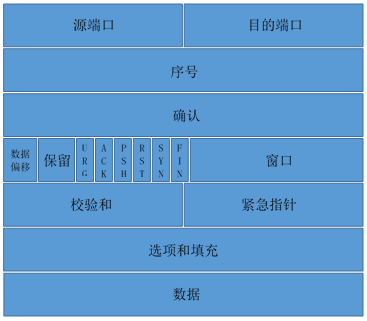

网络通信协议原理
TCP/IP-- 网络七（四）层协议
七层协议层次结构 | 四层协议 | 对应的设备 | 对应的协议 |
应用层 | 应用层 | 网关 | TELNET、HTTP、FTP |
表示层 | 应用层 | 网关 | 加密 |
会话层 | 应用层 | 网关 | SQL |
传输层 | 传输层 | 网关 | TCP、UDP |
网络层 | 网络层 | 路由器 | IP |
数据链路层 | 网络接口层 | 网桥、交换机 | ARP、RARP |
物理层 | 网络接口层 | 网卡、网线、中继器等 |
TCP（Transmission Control Protocol，传输控制协议）
- 定义：一种面向连接的、可靠的、基于字节流的传输层通信协议，协议号为6
- 报文头部格式：

- 连接的建立与终止：
原理图：三次握手：首先Client端发送连接请求报文，Server端接受连接后回复ACK报文，并为这次连接分配资源。Client端接收到ACK报文后也向Server端发生ACK报文，并分配资源，TCP连接就建立了。四次挥手：首先Client端发送FIN报文请求终止连接，Server端接受后回复确认收到FIN报文并且进行断开连接，然后发送FIN报文给Client端，Client端接收到报文，回复ACK表示收到，等待断开连接。

- TCP状态转换：
共十一种状态，如原理图所示，添加一种，CLOSING
- Nagle算法与延迟ACK：
Nagle算法：为了减少广域网的分组数目，从而减少网络拥塞的出现，该算法要求在一个TCP连接上，当某个小组的数据没有全部收到ACK确认时，下一个小组是不能发送数据的延迟ACK：如果TCP对每个数据包都发送一个ACK确认，那么代价比较高，所以TCP会延迟一段时间，如果这段时间内有数据发送到对端，则捎带发送ACK，如果在延迟ACK定时器触发时，发现ACK尚未发送，则立即单独发送两者同时使用会产生死锁现象。
- 快速重传与快速恢复（待整理）：
UDP（User Datagram Protocol，用户数据报协议）
- 定义：提供面向事物的简单不可靠信息传送服务，协议号为17
- 报文头部格式：

HTTP（HyperText Transfer Protocol，超文本传输协议）
- 定义：HTTP是一个客户端和服务器端请求和应答的标准
- 版本：
HTTP1.0：请求与响应支持头域；响应对象以一个响应状态行开始；响应对象不只限于超文本；开始支持客户端通过POST方法像WEB服务器提交数据；支持长连接（但默认使用短连接）；缓存机制；身份认证
HTTP1.1：相对于HTTP1.0，增加了keeplive(长)连接；chunked编码传输；字节范围请求；请求流水线
HTTP2.0：相对于HTTP1.1，增加了多路复用；头部压缩；随时复位；服务器端推流；优先权和依赖
- 响应状态码：
1xx：消息2xx：成功3xx：重定向4xx：客户端请求错误5xx：服务器错误
- 数据传输方式：
类似与数据库中的增删改查，区分了客户端向服务器发出了一系列请求方法。GET:获取服务器上的某个资源，发送的信息有最大长度限制HEAD:用于获取报头PUT:从客户端向服务器传送的数据取代制定的文档内容，相当于修改DELETE:请求服务器删除制定的页面POST:向指定资源提交数据进行处理请求，数据包含在请求体中，不限制大小。OPTIONS:允许客户端查看服务器性能
- cookie和session：（待查询）
- HTTPS与HTTP区别：
HTTPS是HTTP的安全版，在HTTP的基础上加入SSL层，进行加密。HTTPS协议需要到CA申请证书HTTPS具有安全的ssl加密传输协议运用不同的连接方式，端口号也于HTTP不同，HTTP为80，HTTPS为443
DNS（Domain Name System，域名系统）
定义：在因特网上作为域名和IP地址相互映射的一个分布式数据库，能够使用户更方便访问互联网，而不用去基础能够呗机器直接读取的IP数串
DNS查询方法：